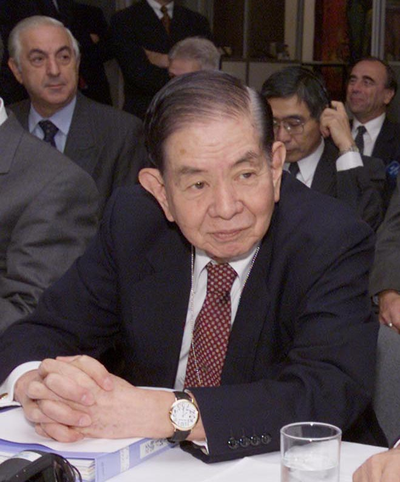

大
大野木克信
おおのぎ・かつのぶ
事件当時、長銀頭取
役割：1998年3月期決算と配当の責任を問われた旧経営陣の中心人物
その後：東京地裁・高裁は有罪、最高裁で無罪確定。2017年死去6
1990年代初頭〜2025年
バブル期の不動産融資と関連ノンバンク支援で不良資産が累積した長銀は、受皿会社への振替や追加融資で処理を先送りし、1998年10月に特別公的管理へ移行した。1
国有化後、預金保険機構はニュー・LTCB・パートナーズへ既存普通株を10億円で譲渡し、買い手は新株に1,200億円を出資した。瑕疵担保条項を巡っては新生銀行と預金保険機構の見解が対立した。1
旧経営陣3人は一・二審で有罪となったが、最高裁は2008年7月に無罪とした。2025年7月31日、SBI新生銀行の公的資金は全額返済された。1
日本長期信用銀行は1952年12月、長期信用銀行法の施行に伴い、金融債を発行して長期固定金利貸付を行う専門銀行として設立された。戦後の産業政策の下で電力、鉄鋼、海運、石炭などの基幹産業に長期資金を供給し、その後は重化学工業、流通、サービス、プロジェクトファイナンス。リースへ業務範囲を広げた。大野木克信は事件当時の頭取として、1998年3月期決算と配当を担う立場にいた。1
長銀の業務拡大は、長期資金を必要とする産業への貸付だけでなく、関連親密先と関連ノンバンクを通じた不動産融資の増加を伴った。調査メモでは、バブル期の資金配分が後の不稼働資産の累積につながった経緯と、頭取、副頭取。行政担当者がそれぞれ異なる立場で処理に関与した過程が整理されている。銀行設立から国有化までの経営判断を、年表と決算資料の両方で確認できるようにした。1
バブル期には長銀本体だけでなく、関連親密先と関連ノンバンクを通じた不動産融資が拡大した。内部調査委員会は、関連親密先が審査と事後管理体制の未整備なまま、不動産担保に依存した営業貸付を急速に拡大したと整理している。1990年3月に大蔵省が総量規制を発出し、地価が下落すると、不動産担保融資は不良債権化した。EIEグループ向け融資は、その象徴的事例として挙げられた。1
長銀は不良資産を直ちに処理せず、受皿会社への担保不動産移転、救済支援名目の債権放棄。新規融資によって問題を段階的に処理する方針を採った。1991年12月にはエヌアールコーポレーションを設立し、受皿会社向け貸付へ振り替えることで形式上は正常債権として扱った。1995年度には日本リースへ約1,100億円の前倒し支援を行った。内部調査委員会は、支援先債権を開示対象から除外するためのディスクロージャー対策と推認した。1
1997年3月期には、主要関連親密先7社の最終要処理額が1兆4,300億円、その他を含む合計最終要処理額が1兆7,100億円。当面要処理額が1兆1,000億円と見積もられていた。それにもかかわらず、長銀は関連親密先への追加貸出を行い、他金融機関への返済資金を供給した。1998年3月期には、上場有価証券の含み損が2,191億円に達した一方、評価方法を低価法から原価法へ変更し。従来基準なら認識される2,645億円の損失を回避した。1
内部調査委員会の認定では、1998年3月期に本来必要な償却・引当は約8,200億円だったが、実施額は約6,100億円強に抑えられた。その結果、剰余金が460億円あるように見え、1株3円。合計約71億円の配当が行われた。大野木、須田、鈴木の3人は決算と配当に関与した旧経営陣として告訴され。東京地裁と東京高裁では有罪とされた。1
大蔵省（当時。以下同じ。）は，銀行法（昭和５６年法律第５９号）の施行に伴い，昭和５７年４月に「普通銀行の業務運営に関する基本事項等について」と題する通達（いわゆる「基本事項通達」。昭和５７年４月１日付け蔵銀第９０１号）を発出したが，その中に経理関係として，普通銀行の会計処理の基準となるべき「決算経理基準」を定めており，（中略）銀行の関連ノンバンク等に対する貸出金は，銀行がこれらに対し追加的な支援を予定している場合には，原則として回収不能見込み等とすることはできないが，（中略）銀行が関連ノンバンク等に対する金融支援を継続する限りは，毎期において確定支援損として損金算入が認められる範囲で段階的な処理を行うことができるというもの）に従った会計処理を行い，長期信用銀行においても，この基本事項通達を準用する取扱いにより，同様の会計処理を行っていた。したがって，銀行の関連ノンバンク等に対する貸出金については，一般取引先に対する貸出金とは異なり，銀行が関連ノンバンク等に対する金融支援を継続する限りは，償却・引当はほとんど行われていなかった。
意味：関連ノンバンクを支援し続ける限り、損失処理を段階化できた当時の会計慣行を、判決が制度の文脈ごと記述している。
1998年7月13日。金融監督庁は主要19行検査の一環として長銀への立入検査を開始した。10月19日の通知では、1998年3月末の分類債権としてII分類3兆347億円、III分類1兆1,254億円、IV分類1,373億円が示され、1998年9月末見込みの自己資本は1,600億円。含み損は約5,000億円とされた。10月23日、長銀は預金等の払戻しを停止するおそれがあると申し出て、内閣総理大臣は特別公的管理開始を決定した。安斎隆が11月4日に新頭取となり、国有化後の再建と売却を担った。2
国有化後の手続では、金融再生委員会が長銀の資産24兆6,026億円のうち19兆3,780億円を長銀が保有するのに適当な資産と判定した。長銀は外部弁護士による内部調査委員会を設置し、1999年6月4日に旧経営陣の刑事責任に関する第1回報告を受けて告訴した。6月10日に大野木、須田、鈴木が逮捕され。6月30日に起訴された。破綻処理の判断と旧経営陣の責任追及は、同じ長銀問題から派生しながら異なる機関が担った。21
長銀では，事業推進部が関連ノンバンクを含む長銀の関連親密先とされる会社に対する貸出金に関する自己査定基準の策定を担当した。事業推進部では，自己資本比率（ＢＩＳ比率）の維持を図るなどのため，償却・引当の財源を見据え，平成９年６月３０日を基準日として実施された自己査定トライアル及び同年１２月３１日を基準日として実施された自己査定本番における各査定状況等を踏まえて，当初策定した基準案に償却・引当が緩和されることとなる数度の修正を加え，平成１０年３月３０日，それ以外の「一般先」とは異なる査定基準を内容とする「特定関連親密先自己査定運用細則」及び「関連ノンバンクにかかる自己査定運用規則」を確定させた。
意味：裁判所が、自己資本比率の維持を背景に、関連親密先を一般先と異なる基準で査定した経緯を認定している。
1999年12月24日、預金保険機構、長銀。ニュー・LTCB・パートナーズは基本合意書を締結した。預金保険機構は発行済普通株2,417,075,000株を10億円で譲渡し、ニュー・LTCB・パートナーズは新規発行普通株式3億株を1,200億円で引き受けた。譲渡契約には、一定の貸出関連資産が基準日から3年以内に20％以上減価した場合などに解除できる瑕疵担保条項が置かれた。2000年6月、新生銀行はそごうグループ向け債権元本1,977億円について解除権を行使した。34
この条項は、譲渡後の貸出資産について、基準日に使用された債務者区分を前提に、元本または利息の3か月以上の延滞、実質債務超過や繰越損失、貸出条件の緩和要請。債権放棄の要請などを瑕疵と推定する仕組みだった。そごう向け債権を巡っては、新生銀行が解除を請求し、預金保険機構が契約要件を審査した。金融庁長官は、不同意通知を巡る問題を契約条項を満たすかどうかの法的解釈の問題と説明した。35
刑事事件では、東京地裁が2002年9月10日に大野木へ懲役3年・執行猶予4年、須田と鈴木へ懲役2年・執行猶予3年を言い渡し。東京高裁は2005年6月21日に控訴を棄却した。最高裁第二小法廷は2008年7月18日、1998年3月期当時に改正後の決算経理基準を関連ノンバンク融資へ直ちに適用すべきことが明確ではなかったとして、3人を無罪とした。2025年7月31日、SBIホールディングスが国保有の優先株を全て取得し、SBI新生銀行の公的資金は全額返済された。678
この経過では、旧経営陣の判断、長銀自身による告訴、金融監督庁の検査、預金保険機構による株式取得、買い手との契約、承継後の債権処理。刑事裁判の判断が順に接続している。刑事裁判は会計基準の適用が明確だったかを判断し、内部調査委員会は処理の経緯と組織上の問題を調べ、行政は預金者と金融債保有者を保護しながら銀行を譲渡した。2025年の完済は資金処理の終点を示すが、1998年から2008年までの刑事責任の判断と、売却後の契約関係は別の手続として記録されている。さらに、旧株主、買収投資家、預金者、債務者、国の負担は同じではなく。各手続で異なる当事者が判断を受けた。28



| 旧長銀本店 | 東京都千代田区内幸町2-1-8 | 破綻時の本店 | 13 |
| 新生銀行本店 | 東京都中央区日本橋室町2-4-3 | 現在の承継銀行本店 | 14 |
| 金融庁・証券取引等監視委員会 | 東京都千代田区霞が関3-2-1 | 検査・行政処分の中心 | 15 |
| 東京地方裁判所 | 東京都千代田区霞が関1-1-4 | 刑事一審・民事審理 | 16 |
| 東京高等裁判所 | 東京都千代田区霞が関1-1-4 | 刑事控訴審 | 17 |
| 最高裁判所 | 東京都千代田区隼町4-2 | 2008年無罪判決 | 18 |
| 国会議事堂 | 東京都千代田区永田町1-7-1 | 金融再生法・瑕疵担保条項の国会論議 | 19 |
| 日本銀行本店 | 東京都中央区日本橋本石町2-1-1 | 金融システム安定・長銀問題への政策対応 | 20 |
長銀の不動産融資と関連先支援で不稼働資産が累積し、受皿会社への振替と決算処理を経て、特別公的管理、株式譲渡。新生銀行への承継へ進んだ。1
おおのぎ・かつのぶ
事件当時、長銀頭取
役割：1998年3月期決算と配当の責任を問われた旧経営陣の中心人物
その後：東京地裁・高裁は有罪、最高裁で無罪確定。2017年死去6
すだ・まさみ
長銀副頭取
役割：旧経営陣として決算と不良債権処理に関与
その後：一・二審有罪、最高裁で無罪確定6
すずき・かつじ
長銀副頭取
役割：関連親密先向け融資の引当・償却判断に関与
その後：一・二審有罪、最高裁で無罪確定7
あんざい・たかし
1998年11月以降の新頭取
役割：国有化後の再建と売却を担った
その後：新生銀行への譲渡を実施2
もり・ひでふみ
国有化後の副頭取
役割：国有化後の新経営陣
その後：詳細は本調査で未確認2
よしかわ・みのる
国有化後の副頭取
役割：日本興業銀行出身の新経営陣
その後：詳細は本調査で未確認2
おばた・ふみお
国有化後の専務
役割：東京三菱銀行出身の新経営陣
その後：詳細は本調査で未確認2
かわばた・かずはる
内部調査委員会委員長
役割：旧経営陣の刑事・民事責任を調査
その後：内部調査報告を提出1
やなぎさわ・はくお
金融再生担当国務大臣
役割：金融再生法施行時の行政調整を担当
その後：金融再生委員会発足前の行政側人物2
はやみ・まさる
日本銀行総裁
役割：金融危機下の金融システム安定に関与
その後：2003年に退任21
Timothy Collins
リップルウッド・ホールディングス関係者
役割：ニュー・LTCB・パートナーズを組成した投資家側
その後：個人としての責任は未確認3
個人名未確認
行政側の検査担当者
役割：資産査定、早期是正、破綻認定を担った
その後：個人名と責任の詳細は未確認2
個人名は判決本文未確認
最高裁判所
役割：会計基準の不明確性を理由に無罪判決
その後：2008年7月18日に判決7
個人名は当該談話で未確認
預金保険機構
役割：株式取得、破綻処理、そごう向け債権の瑕疵担保適用を判断
その後：2025年の公的資金完済まで処理に関与4
決算を担った旧経営陣、国有化後に処理を進めた行政と新経営陣、譲渡後の瑕疵担保を巡って対立した承継銀行と預金保険機構を中心に。調査と刑事裁判の関係を示す。
上司と部下。大野木は頭取、須田は副頭取として1998年3月期決算・配当を担い、同一事件で逮捕・起訴された。両者とも一・二審有罪だったが、最高裁で無罪となった。6
上司と部下。頭取と副頭取として、関連親密先向け融資の引当・償却判断を共有したと検察が主張したが、最高裁は刑事責任を否定した。7
対立・確執。内部調査委員会は、長銀自身の告訴判断のために設置され、1999年6月4日に刑事責任の可能性を報告した。9
対立・確執。長銀の告訴後、東京地検は1999年6月10日に3人を逮捕し、6月30日に起訴した。1
対立・確執。長銀は検査で自己資本1,600億円、含み損約5,000億円と評価され、同年10月23日に特別公的管理へ移行した。2
資金の出し手と受け手。1998年6月26日に合併検討が発表されたが、交渉は成立せず、最終的に一時国有化へ進んだ。1
盟友。SBCは2,000億円の資本調達を斡旋する提携相手だったが、資本調達は実現しなかった。1
対立・確執。SBCは長銀の巨額不稼働資産を認識した後、資本調達交渉が長期化した。1
資金の出し手と受け手。預保は既存株を10億円で譲渡し、パートナーズは新株に1,200億円を出資した。3
庇護・口利き。譲渡契約には、一定の貸出資産が20％以上減価した場合に政府側が引き取る瑕疵担保条項が置かれた。3
対立・確執。新生銀行はそごう向け債権の解除を請求し、預保は契約要件を審査して認定した。4
資金の出し手と受け手。新生銀行が引き継いだそごう向け貸出関連資産は元本1,977億円で、そごう側は970億円の債権放棄を要請した。4
金銭授受。1998年3月期に、実際には不足していたと内部調査委員会が判断した利益を基に約71億円を配当した。1
対立・確執。特別公的管理開始に伴い、預保が長銀株を取得し、旧株券は公告時に無効となった。2
対立・確執。長銀・RCCは旧経営陣に民事損害賠償を請求したが、2008年7月18日、最高裁は旧経営陣の民事責任を否定する判断を維持した。22
○池田幹幸君 そういう経過があったことは事実です。しかし、監督庁がそういうのを全然知らなかったというのはまず考えられないんです。 といいますのは、検査中であったとしても、ともかくその時点では長銀が関連ノンバンク向け不良債権を甘く査定しておる、それから不良債権の飛ばしに使った受け皿会社の存在も把握していた、こういうことを当時から既に言われておるわけです。 とりわけ、それよりさらに前、九六年の大蔵検査の際に、長銀は回収不能債権が一兆円を超すということを既に内部調査で知っておって、自分で確認して、大野木元頭取が金融検査官室長に、宮川という人ですが、回収不能債権を圧縮するように依頼したと。結果的に長銀の回収不能債権は二千億円と査定されて、八千億円もの不良債権隠しが、結局これが積もり積もって九八年の粉飾につながったと言われているわけですけれども、このことも金融監督庁はつかんでいたんですよ。これは大蔵省の検査部から受け継いでおるということだったんです。結局、長銀が何のためにこんな不良債権を甘く査定したりするのか。これはもう不良債権隠しそのものが目的だったといって間違いないと思うんです。
意味：これは池田議員による追及発言であり、裁判所の確定認定ではない。監督行政と長銀内部の査定をめぐる国会での疑惑追及の緊張を示す。
調査メモで確認された関係は、暴力団や総会屋との接点を示すものではない。以下では、内部調査委員会の指摘、公的資料で認定された契約。未確認事項を区別して掲載する。
株式会社イ・アイ・イーインターナショナル 指摘
日本リース・長銀 指摘
エヌアールコーポレーション等 指摘
SBC・長銀 認定
リップルウッド、ニュー・LTCB・パートナーズ 認定
政府・金融再生委員会 認定
組織名・人物名 確認できない
口座・法人名 確認できない
以上のとおりであって，税法基準は，不良債権償却証明制度の運用において，銀行の経営の健全性及び適切性を維持するため，銀行を指導・監督・規制する権限を有していた大蔵省の担当者によって実際に行われていた指導・監督権限に基づき，銀行の資産内容の健全性と決算業務の適切性を図る見地から，無税償却・引当が可能な貸出金すなわちⅣ分類と査定された貸出金の償却・引当を義務づけていたものであり，当時において，「公正なる会計慣行」であったと評価できるというべきである。（中略）関連ノンバンクに対する支援を継続して，関連ノンバンクの再建を図ることは，関連ノンバンクの破綻を防ぐだけでなく，ひいては金融システム全体の破綻を回避することに資するものであり，再建期間中における銀行の関連ノンバンク向け貸出金に対する償却・引当をしないという会計慣行もまた，（中略）合理性を有するもので，「公正なる会計慣行」に当たると判断した。
意味：最高裁無罪の核心である、当時の税法基準を「公正なる会計慣行」と評価した論理が示されている。
| 東京地裁 | 2002-09-10 | 懲役3年・執行猶予4年 |
| 東京高裁 | 2005-06-21 | 控訴棄却 |
| 最高裁 | 2008-07-18 | 原判決破棄・無罪 |
証券取引法違反・商法違反。確定6
| 東京地裁 | 未確認 | 懲役2年・執行猶予3年 |
| 東京高裁 | 未確認 | 控訴棄却 |
| 最高裁 | 2008-07-18 | 無罪 |
証券取引法違反・商法違反。確定6
| 東京地裁 | 未確認 | 懲役2年・執行猶予3年 |
| 東京高裁 | 未確認 | 控訴棄却 |
| 最高裁 | 2008-07-18 | 無罪 |
証券取引法違反・商法違反。確定6
| 東京地裁 | 2005-05-19 | 審理 |
| 東京高裁 | 2006-11-29 | 審理 |
| 最高裁 | 2008-07-18 | 旧経営陣の責任を否定する下級審判断を維持 |
違法配当等に関する損害賠償。確定22
| 大阪地裁 | 2007-04-13 | 請求否定 |
株主による損害賠償請求。控訴審以降は未確認25
| 政府・金融監督庁 | 1998-10-23 | 特別公的管理開始、株式取得、業務改善命令 |
特別公的管理開始、株式取得。業務改善命令。確定2
| 預金保険機構 | 2000年以降 | 案件ごとに判断 |
瑕疵担保条項に基づく債権引取り申請。案件ごとの判断4
主 文 原判決及び第１審判決を破棄する。 被告人らはいずれも無罪。 理 由 （中略） 本件公訴事実の要旨は，「被告人Ａは，平成７年４月２８日から平成１０年９月２８日までの間，東京都千代田区内に本店を置き長期信用銀行業務等を目的とする長期信用銀行で，発行する株式が東京証券取引所第１部等に上場されている株式会社日本長期信用銀行（以下「長銀」という。）の代表取締役頭取であった者，被告人Ｂは，平成９年１０月１日から平成１０年８月２１日までの間，長銀の代表取締役副頭取であった者，被告人Ｃは，平成９年１０月１日から平成１０年３月３１日までの間，長銀の代表取締役副頭取であった者であるが，被告人３名は共謀の上，第１ 長銀の業務に関し，平成１０年６月２９日，大蔵省関東財務局長に対し，長銀の平成９年４月１日から平成１０年３月３１日までの事業年度（以下「平成１０年３月期」ともいう。）の決算には５８４６億８４００万円の当期未処理損失があったのに，取立不能のおそれがあって取立不能と見込まれる貸出金合計３１３０億６９００万円の償却又は引当をしないことにより，これを過少の２７１６億１５００万円に圧縮して計上した貸借対照表，損益計算書及び利益処分計算書を掲載するなどした上記事業年度の有価証券報告書を提出し，もって，重要な事項につき虚偽の記載のある有価証券報告書を提出し，第２ 長銀の上記事業年度の決算には，上記のとおり，５８４６億８４００万円の当期未処理損失があって株主に配当すべき剰余金は皆無であったのに，（中略）」
意味：旧経営陣に対する検察側の公訴事実を、最高裁判決自身が具体的な金額と配当行為まで記録している。最高裁の結論は一・二審の有罪判決を破棄し、無罪とした。
大蔵省（当時。以下同じ。）は，銀行法（昭和５６年法律第５９号）の施行に伴い，昭和５７年４月に「普通銀行の業務運営に関する基本事項等について」と題する通達（いわゆる「基本事項通達」。昭和５７年４月１日付け蔵銀第９０１号）を発出したが，その中に経理関係として，普通銀行の会計処理の基準となるべき「決算経理基準」を定めており，（中略）銀行の関連ノンバンク等に対する貸出金は，銀行がこれらに対し追加的な支援を予定している場合には，原則として回収不能見込み等とすることはできないが，（中略）銀行が関連ノンバンク等に対する金融支援を継続する限りは，毎期において確定支援損として損金算入が認められる範囲で段階的な処理を行うことができるというもの）に従った会計処理を行い，長期信用銀行においても，この基本事項通達を準用する取扱いにより，同様の会計処理を行っていた。したがって，銀行の関連ノンバンク等に対する貸出金については，一般取引先に対する貸出金とは異なり，銀行が関連ノンバンク等に対する金融支援を継続する限りは，償却・引当はほとんど行われていなかった。
意味：関連ノンバンクを支援し続ける限り、損失処理を段階化できた当時の会計慣行を、判決が制度の文脈ごと記述している。
長銀では，事業推進部が関連ノンバンクを含む長銀の関連親密先とされる会社に対する貸出金に関する自己査定基準の策定を担当した。事業推進部では，自己資本比率（ＢＩＳ比率）の維持を図るなどのため，償却・引当の財源を見据え，平成９年６月３０日を基準日として実施された自己査定トライアル及び同年１２月３１日を基準日として実施された自己査定本番における各査定状況等を踏まえて，当初策定した基準案に償却・引当が緩和されることとなる数度の修正を加え，平成１０年３月３０日，それ以外の「一般先」とは異なる査定基準を内容とする「特定関連親密先自己査定運用細則」及び「関連ノンバンクにかかる自己査定運用規則」を確定させた。
意味：裁判所が、自己資本比率の維持を背景に、関連親密先を一般先と異なる基準で査定した経緯を認定している。
長銀は，平成１０年３月期決算について，上記運用細則ないし運用規則に従って，関連ノンバンクを含む長銀の関連親密先とされる会社に対する貸出金の資産分類，償却・引当の実施の有無を査定したが，その自己査定は(1)で述べた改正前の決算経理基準のもとでのいわゆる税法基準によれば，これを逸脱した違法なものとは直ちには認められないが，資産査定通達，４号実務指針及び９年事務連絡（以下，これらを「資産査定通達等」という。）によって補充される改正後の決算経理基準の方向性からは逸脱する内容となっていた。 （中略） そして，同年６月２５日に開催された定時株主総会において，同期営業報告書，貸借対照表，損益計算書を報告するとともに，当期未処理損失が２７１６億円余りであることを前提に任意積立金を取り崩し，１株当たり３円の割合による利益配当を行う旨の利益処分計算書案を議案として提出し，可決承認された。そして，これに基づき，そのころ，長銀の株主に対し，合計７１億円余りの配当が支払われた。
意味：自己査定の問題と、株主総会での配当実行が連続した出来事として記録されている。
以上のとおりであって，税法基準は，不良債権償却証明制度の運用において，銀行の経営の健全性及び適切性を維持するため，銀行を指導・監督・規制する権限を有していた大蔵省の担当者によって実際に行われていた指導・監督権限に基づき，銀行の資産内容の健全性と決算業務の適切性を図る見地から，無税償却・引当が可能な貸出金すなわちⅣ分類と査定された貸出金の償却・引当を義務づけていたものであり，当時において，「公正なる会計慣行」であったと評価できるというべきである。（中略）関連ノンバンクに対する支援を継続して，関連ノンバンクの再建を図ることは，関連ノンバンクの破綻を防ぐだけでなく，ひいては金融システム全体の破綻を回避することに資するものであり，再建期間中における銀行の関連ノンバンク向け貸出金に対する償却・引当をしないという会計慣行もまた，（中略）合理性を有するもので，「公正なる会計慣行」に当たると判断した。
意味：最高裁無罪の核心である、当時の税法基準を「公正なる会計慣行」と評価した論理が示されている。
平成10年７月13日に金融監督庁により主要19行に対する検査の一環として日本長期信用銀行（以下「長銀」という。）に対する立入検査が開始され，同年３月期の自己査定結果に基づき，その資産内容等について実態把握が行われ，同年10月19日に長銀に対し検査結果が通知された。 同検査結果においては，同年３月末の資産査定結果として I 分類が21兆8,926億円，II 分類が３兆347億円，III 分類が１兆1,254億円，IV 分類が1,373億円となることが示されている。 また，（中略）平成10年９月期の長銀の自己資本額は1,600億円であり，また，マイナス5,000億円の有価証券等の含み損益を有していたことが示されたところである。 平成10年10月23日に金融再生法が施行されたが，同日，長銀より同法第68条第２項に基づき，内閣総理大臣に対して，「その業務及び財産の状況に照らし預金等の払戻しを停止するおそれが生ずると認められる」旨の申出がなされた。 当該申出及び長銀の財務状況を踏まえ，同日，内閣総理大臣により，同法第36条第１項に基づき，特別公的管理の開始の決定が行われ，同時に，同法第38条第１項に基づき，預金保険機構が長銀の株式を取得する決定が行われた。
意味：検査結果から一時国有化までの行政判断が、数値と法的手続を伴って記録されている。
旧経営陣等の責任追及に関しては、金融再生法第50条は特別公的管理銀行に対し旧経営陣に対する民事上の責任追及義務を課すとともに、特別公的管理銀行の取締役及び監査役に対し告発義務を課しているところである。 長銀においては当該規定等を踏まえ、平成10年12月11日、旧経営陣等の職務上の義務違反等に基づく民事上の責任追及、刑事上の告発等の必要性や妥当性につき取締役会、監査役会に報告することを目的として、取締役会及び監査役会に直結した独立の組織として外部の弁護士から構成される「内部調査委員会」が設置され、旧経営陣の責任追及に向けた検討が行われた。 その結果として、刑事責任の追及に関しては、同委員会はその検討結果を平成11年６月４日に第１回報告として取りまとめ、経営陣に対して報告が行われた。これを受け長銀は、同日、旧経営陣を証券取引法違反（有価証券報告書虚偽記載）及び商法違反（違法配当）の罪で、東京地方検察庁及び警視庁に告訴するとともに、証券取引等監視委員会に通報した。同告訴をも受け、同月10日、東京地方検察庁により旧経営陣３名が証券取引法違反の容疑で逮捕された。
意味：国有化後の長銀自身が外部弁護士による調査を経て、旧経営陣を刑事告訴した過程が分かる。
「実行日」とは、ニュー・LTCB・パートナーズが長銀の新規発行普通株式3億株の発行価格1,200億円（１株当たり400円）を支払い、且つ発行済普通株式2,417,075,000株を10億円で購入する日を意味し、「クロージング」とは、実行日に当該新規発行普通株式に係る出資の払込み及び当該発行済普通株式の購入並びにそれらに付随する取引が実行されることを意味する。 （中略） ニュー・LTCB・パートナーズは、DIC及び長銀が最終契約に基づく義務を履行することを条件として、 (i) 長銀の単位未満株式を除く発行済普通株式の全部に相当する普通株式2,417,075,000株をDICから10億円（１株当たり約0.41円）で購入し、 (ii) 実行日に長銀の新規発行普通株式3億株を1,200億円（１株当たり400円）で引き受ける。 意味：旧株の取得価格と新株への資本注入額が、契約本文に明記されている。
意味：旧株の取得価格と新株への資本注入額が、契約本文に明記されている。
以下の場合には瑕疵の存在を推定するものとする。下記規定の適用においては、資産判定（99年２月）に使用された債務者区分（金融監督庁検査済みの98年9月基準の自己査定を98年10月27日に時点修正したもの）を使用するものとする。 I . 「正常先」の債権又は「要注意先のうち、直近の決算において繰越欠損が生じておらず、元金の返済及び利息の支払いが当初の約定通り行われている先（いわゆる「要注意先A」）」の債権について、基準日から３年以内に、 (i) 元本又は利息の３ヶ月以上の延滞 (ii) 実質債務超過又は繰越損失の発生（但し、1～2年程度で解消する一過性のものは除く） (iii) 貸出条件緩和の要請（但し、経済的困難に陥った債務者の再建を企図するものに限る） (iv) 債権放棄の要請 のいずれかがあったときは、かかる事実をもって瑕疵と推定する。 （中略） 更に、下記の場合を瑕疵と推定する。 (i) 債務者について支払の停止又は破産、和議開始、会社更生手続開始、会社整理開始、特別清算開始もしくはその他類似の手続の申立があり、かかる申立が申立から60日間却下又は取り下げられない場合。
意味：新生銀行への売却契約における瑕疵担保の発動条件が、債務者の延滞・債務超過・債権放棄要請等として具体化されている。
○大野木参考人 お答え申し上げます。 ただいま村田先生からのお話、一つ一つが私の心の中に鋭く突き刺さると申しますか、本当に私が昨今感じて申しわけないと思っていることをおっしゃっていただいたと申しますか、まさに御指摘いただいたということで、深く反省いたしておるところでございます。 顧みますと、長期信用銀行は戦後の復興という目的で特別な任務を持って生まれた銀行でございまして、それだけやはり社会的使命というものを重視しなくてはいけなかったという存在であったと思います。 一方、振り返りますと，高度成長という時代が過ぎてから金融自由化というものを迎えまして，やはり長銀というのはその時点から，何か脱皮して生きていく道を模索しなくてはいけないという宿命にそこから立ったんじゃないか，そのように思います。 そこで，八五年からのバブルというものが来たわけでございまして，やはりここで資金配分というものを，自由化及び高度成長が終わってからの長信銀の脱皮の方向というものに，今から振り返りますと申しわけないのですが，やや妥当性を欠くような配分に傾斜していって不良資産をふやしていったということは，これは深く反省し，また事実としてお認めしなくてはいけないことじゃないか，そのように思っております。 （中略） やはりそのスピード感といったものが，我々の計画というものと昨今のマーケットの要求するスピード、このギャップ，（中略）深く反省しております。
意味：頭取本人が、バブル期の資金配分の妥当性欠如や不良資産の増加と処理速度の遅れを公の場で認めている。
○池田幹幸君 そういう経過があったことは事実です。しかし、監督庁がそういうのを全然知らなかったというのはまず考えられないんです。 といいますのは、検査中であったとしても、ともかくその時点では長銀が関連ノンバンク向け不良債権を甘く査定しておる、それから不良債権の飛ばしに使った受け皿会社の存在も把握していた、こういうことを当時から既に言われておるわけです。 とりわけ、それよりさらに前、九六年の大蔵検査の際に、長銀は回収不能債権が一兆円を超すということを既に内部調査で知っておって、自分で確認して、大野木元頭取が金融検査官室長に、宮川という人ですが、回収不能債権を圧縮するように依頼したと。結果的に長銀の回収不能債権は二千億円と査定されて、八千億円もの不良債権隠しが、結局これが積もり積もって九八年の粉飾につながったと言われているわけですけれども、このことも金融監督庁はつかんでいたんですよ。これは大蔵省の検査部から受け継いでおるということだったんです。結局、長銀が何のためにこんな不良債権を甘く査定したりするのか。これはもう不良債権隠しそのものが目的だったといって間違いないと思うんです。
意味：これは池田議員による追及発言であり、裁判所の確定認定ではない。監督行政と長銀内部の査定をめぐる国会での疑惑追及の緊張を示す。
筆坂秀世君 池田議員の御質問にお答えいたします。 かくの質問ですので、それなりに丁寧にお答えしたいと思います。 まず、長銀処理についてでありますけれども、日本長期信用銀行がなぜこのような事態になったのかといえば、それはノンバンクを初めとするバブル業種への極端に傾斜した融資、例えば担保を設定しないような融資、文字どおり乱脈融資を繰り広げてきた結果であります。 例えば、ノンバンク融資は実に五兆円を超えています。融資比率はバブル業種だけで五十七％に達しています。これは他の銀行と比較しても全く異常な数字であります。 この不条理を国民にツケ回して処理する、これは我々の断じて認めるところではありません。 しかも、いまだに政府は、長銀は破綻していない、債務超過ではないという立場をとっています。 だったら、そもそも公的資金の投入は必要でないはずです。仮に破綻していたとするなら、その責任で行い、善良な借り手の保護を銀行業界に任せるべきであります。 ところが、何らの情報開示も行わず、破綻認定もしない、破綻寸前だと言って一時国有化するような特別公的管理だと言うやり方は破綻後であるべきであり、これは公的資金の投入を可能にするものであります。 結局は破綻後であるべきものを、いわばノールールをルールにするようなものであります。
意味：国会議員が、長銀の融資構造と一時国有化の制度設計を強く批判した発言である。
大手銀行を一時国有化し、預金・金融債を保護しながら処理する枠組みが整備された。26
自己資本比率だけでなく、資産分類と償却引当の厳格化が重視されるようになった。27
長銀・日債銀事件後、自己査定と監査意見の連動が重視された。28
特定大口先への融資拡大が破綻原因となった事例を踏まえ、信用リスク管理態勢が監督指針に明記された。27
金融再生委員会はフィナンシャル・アドバイザーを活用し、透明性とグローバル標準を掲げた。2
SBI新生銀行の公的資金が完済され、1990年代金融危機処理の残案件が終了した。8
検察・一審・二審側：改正後の資産査定通達等に従えば、関連ノンバンク向け貸出について追加の償却・引当が必要であり、これを行わず有価証券報告書を提出し。配当したことは違法だと主張した。6
旧経営陣側：1998年3月期当時、改正後の基準を関連ノンバンク融資に適用すべきことは明確でなく、従来の税法基準は当時の公正な会計慣行だったと主張した。7
新生銀行：そごうグループ向け債権元本1,977億円について、契約に基づく解除権を行使した。4
預金保険機構・政府：条項を満たすかどうかは契約解釈の問題であり、適用の可否を審査した。5
批判的評価：最高裁無罪は刑事責任を否定したにすぎず、バブル期の過大なリスクテイク、不良資産処理の先送り。ガバナンス不全まで否定したものではないとする評価がある。29
最高裁：会計基準の過渡期で、改正基準を直ちに唯一の基準として適用すべきことが明確でなかったとして、刑事責任を否定した。7